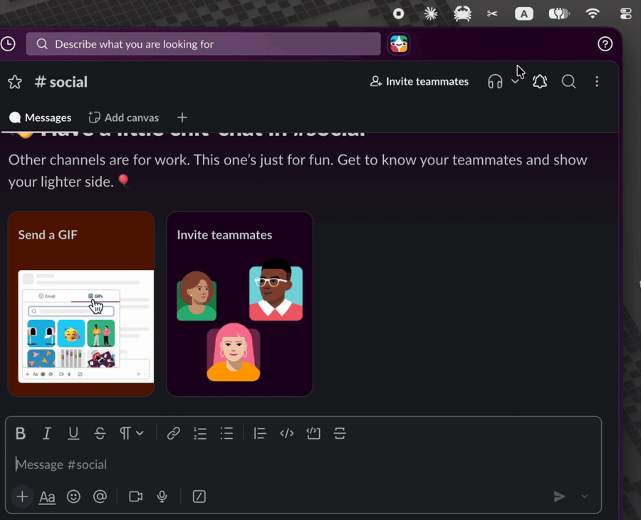
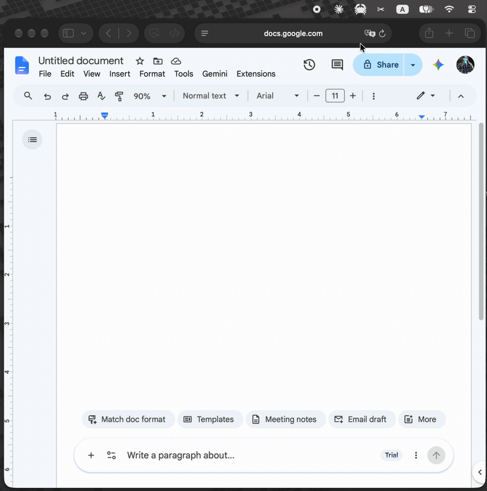

🦀
Copy anything out of Claude Code.
Paste it anywhere, looking right.
clawpypaste is a free macOS menu bar app. Tables land in Slack and Google Docs as real tables, markdown lands as formatting — and every code block, path, and tool output is one click away.


Paste-ready everywhere
Slack gets a native table, Docs a formatted one, Mail a styled one. Raw markdown is a right-click away.
Every block, one click
Code, tool output, file paths, URLs, quotes, whole messages — from the session you're in.
All your sessions
Switch sessions from the menu bar and search across everything you've done with Claude.
Snippet library
Star blocks to pin them, give them names, and find them again later.
Stays out of the way
Reads the files Claude Code already writes. No plugins, no terminal scraping.
Signed & notarized
Universal (Apple Silicon + Intel), macOS 13+. Updates itself in the background.